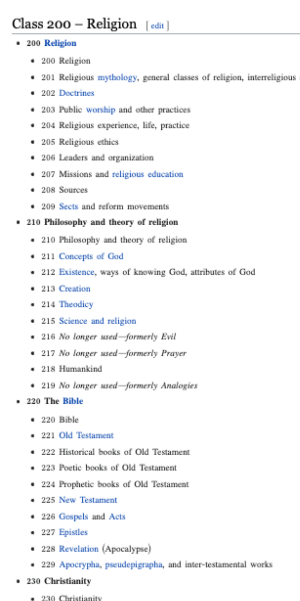
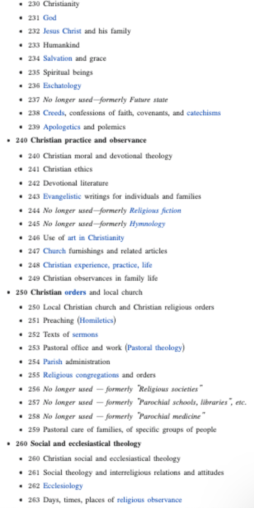
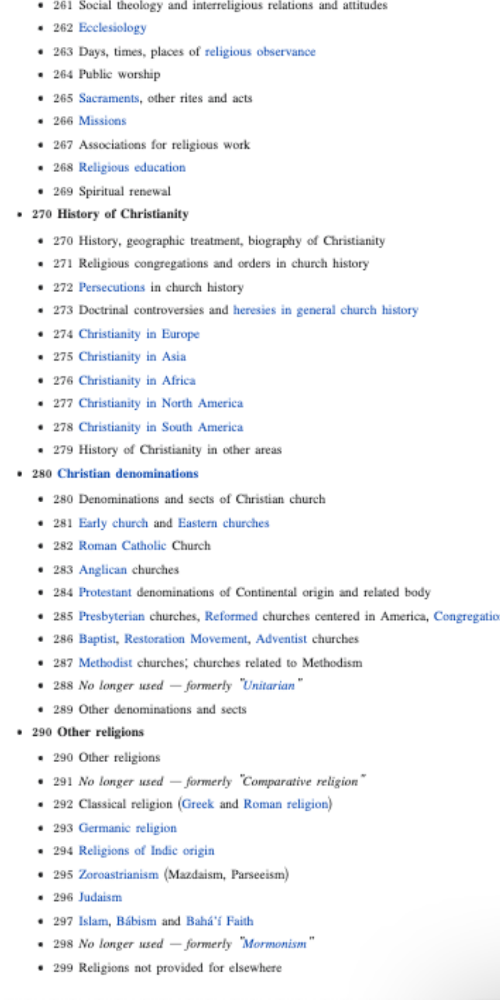
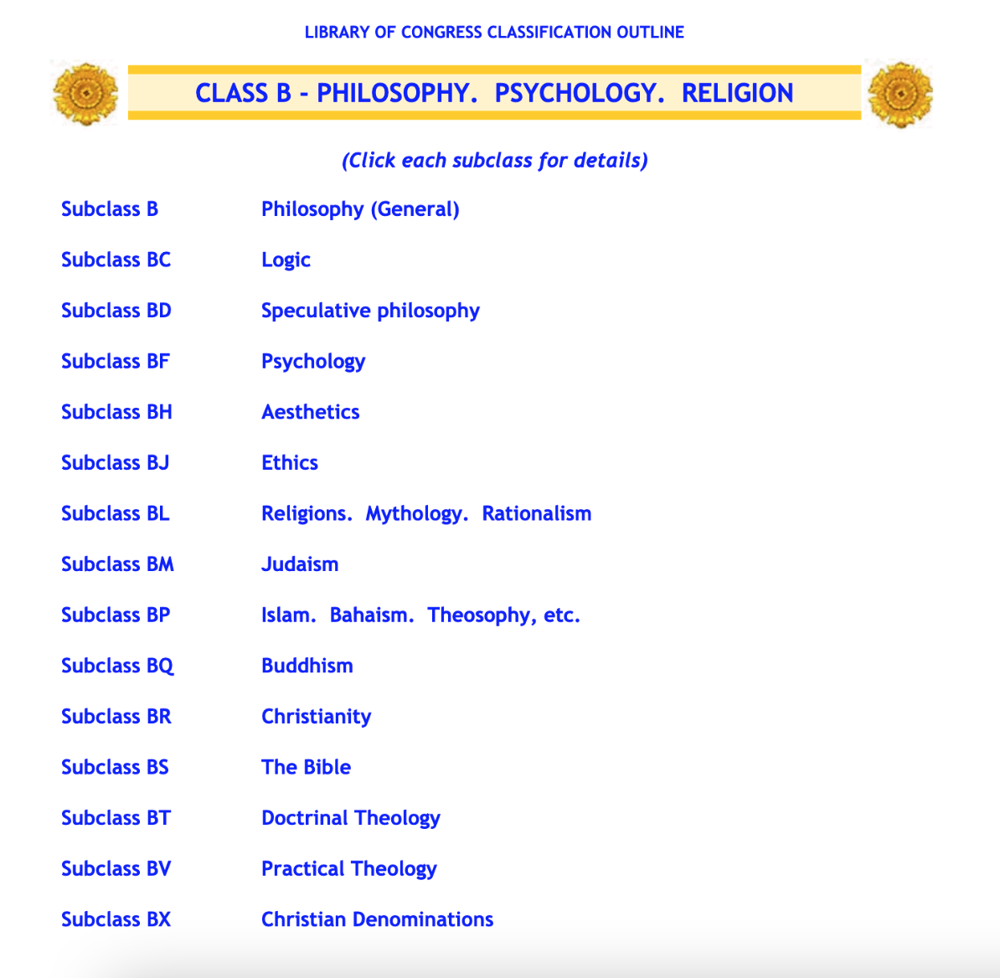
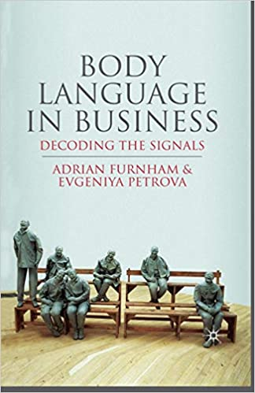

Introduction
Cataloging and classification are essential to the functioning of a library. Physical collections and online databases both use cataloging, metadata, and classifation to help connect users to the materials they need. LIS professionals today continue to learn and analyze existing cataloging and classification systems, and I highlight important parts of their research and writing below. Also included below, as evidence, are two examples of my ability to catalog and classify materials into library systems: one in an online database, the other in a physical collection.
Classification
Clarke (2021) quotes this definition of classification: "the process of organizing knowledge into some systematic order" (p. 204). "Order" is achieved with "organization systems such as categories, taxonomies, and indexing languages" which separate knowledge into different classes (p. 205). Classes are groupings which must maintain: "mutual exclusivity," "joint exhausivity," and "relationships among classes" (p. 205-206). LIS professionals have used the Dewey Decimal Classification (DDC) system, and more recently have used the Library of Congress Classification (LCC) system. In the past, more targeted classification systems like the "reader-interest classification" system employed at the Detroit Public Library in 1936 were considered as alternative to DDC. There is still a push today for more inclusive and neutral classification systems.
Comparison between DDC & LCC
DDC - Classifying religion
  Above, you can see how the classification of religious materials is skewed in the Dewey Decimal Classification system to favor the specification of Christian texts in fields 220-289, while all "other religions" occupy only fields 290-299. You can view each picture more clearly by either right-clicking on the image, or by visiting the DDC Wikipedia page.
LCC - Classifying religion
Here, to the left, you can see changes made in the Library of Congress Classification system that neutralize the religious classifications seen in the DDC. More religions, including Judaism, Islam, and Buddhism, each have their own subclass. Could further improvements be made?
Controlled vocabulary systems
Subject headings like the ones related to religion above in the LCC and DDC systems are created using controlled vocabulary systems.
Schultz & Braddy (2017) write to highlight "the value and power of controlled vocabulary in information discovery" (p. 456). Controlled vocabularies are the key to connecting users with the information they seek online. However, it is difficult "to cover these more advanced search strategies" that involve controlled vocabularies with patrons (p. 463). Still, controlled vocabularies make websites and databases of all kinds easier to use. My particular favorite is the controlled vocabulary used to create search filters on Thredup, an online thrift store.
Cataloging systems
Martin (2021) reviews cataloging ethics in order to "draw on the primary values of serving the needs of users and providing access to materials" (p. 281). Martin defines cataloging as "two parts: descriptive cataloging, which records basic descriptive infomration about the material such as title, author, publisher, and so on, and subject cataloging, which assigns subject headings and a classification number to the material" (p. 281). The purpose of both descriptive and subject cataloging is to organize material into groups which make material easily accessible. Cataloging is affected by "issues of neutrality, inclusivity, self-determination, and privacy," which in turn affect the accessibility of information (p. 296).
Khosrowpour (2021) explains in one series of lecture slides some of the symbols and terms used in MARC records, one kind of cataloging system. This series of lecture slides is a window into MARC-21, and into ongoing efforts to make cataloging materials a more neutral and inclusive. Khosrowpour's instructions on what to add to particular fields, and on what symbols to use to denote more complex information, including "first author" versus "second author," demonstrate how cataloging systems create one standard by which all kinds of different libraries can understand.
Metadata schemas
Greenberg (2005) explains that Jack E. Myers coined the term "metadata" in 1969 and used it to mean "data about data," which can "describe, provide context, indicate the quality, or document object (or data) characteristics" (p. 20). However, Greenberg (2005) goes on to clarify that in the LIS field, "metadata is generally defined as structured data about data, and information and library scientists emphasize the functional goals [of metadata]" through schemes, which "divide, categorize, and analyze concepts" (p. 33). Finally, to further specify what metadata schemes mean, Greenberg (2005) states: "'metadata scheme' connotes not only the semantic container-like structures...but also content standards, controlled vocabularies, taxonomies and ontologies, and full markup language (p. 34).
Evidence
1) Exercise: Creating a Sock Collection & Database
This piece of evidence contains three attachments, which together form one whole project. For this project, I was tasked to catalog socks into a database with a controlled vocabulary system.

Part A
In part A, I listed the socks and their characteristics. This allowed me to identify "fields," a set list of six descriptive categories from which each pair of socks can be individually identified.
Part B
In part B, I created a finite list of terms to use for each of the six "fields." This list of terms is my "controlled vocabulary list." This vocabulary list provides options to select from in order to find particular socks.
Part C
In part C, I provided instructions for the two difficult attributes. These instructions are intended for those who add to or modify the sock collection to follow. This is necessary to eliminate confusion when adding attributes to new socks. For example, in the "material" field, I explain how to describe the sock material if there's just one kind of material, and if the sock has a blend of materials.
Purpose: I included these assignments as one piece of evidence of my ability to create and assign vocabulary terms as metadata for items in a collection.
2) Assignment: MARC Record
Click the image on the left to view the assignment: MARC Record (created from scratch) for Body Language in Business: Decoding the Signals" by Furnham & Petrova.
This piece of evidence contains a MARC record I created from scratch in INFO 248: Beginning Cataloging and Classification. The purpose of a MARC record is to provide a universal marker for a book. The MARC record is recognized as a record system for all libraries. On any given library website, a patron can search for a book in the online library catalog and find its details clearly listed in a MARC record. This way, the patron can confirm that it's the book they're looking for based on the details in the provided description. LIS professionals do not necessarily need to create MARC records from scratch, but may be unable to find a MARC record for a rare book in their catalog, or may want to edit a MARC record to take out unnecessary fields.
I included this piece of evidence to demonstrate my ability to catalog books using MARC-21 format. I've used MARC-21 to catalog new books at work if I can't locate the MARC record in our library circulation system already.
Conclusion
In this MLIS program, I learned how structure and organization standards help libraries across the world share information more easily with patrons. Additionally, I learned how to create controlled vocabularies and catalog records, which has already proven useful in expanding my library's physical collection, and in assisting library patrons looking for specific search results on our databases. Creating this MARC record was a very in-depth learning experience that I would need focused, instructed coursework to continue learning. In the future, I plan to use continuing education programs to add to my understanding of classification, cataloging, controlled vocabularies and metadata. My "sock database" project helped me notice that metadata and classification systems exist all around us. In the future, I will also make the habit to stay organized on my own devices by organizing my photos, files and personal information into distinct categories, and describing my content with the proper metadata. sThis way, I can more easily practice these organizational systems and apply them on a much larger scale.
References
Clarke, R.I. (2021). Library classification systems in the U.S.: Basic ideas and examples. Cataloging & Classification Quarterly 59(2/3), 203-224. https://doi-org.libaccess.sjlibrary.org/10.1080/01639374.2021.1881008
Greenberg, J. (2005). Understanding metadata and metadata schemes. Cataloging & Classificaiton Quarterly 40(3/4), 17-36. https://doi-org.libaccess.sjlibrary.org/10.1300/J104v40n03_02
Khosrowpour, S. (March, 2021). Review of descriptive cataloging. PDF. Link.
Martin, J.M. (2021). Records, responsibility, and power: An overview of cataloging ethics. Cataloging & Classification Quarterly 59(2/3), 281-304. https://doi-org.libaccess.sjlibrary.org/10.1080/01639374.2021.1881008
Schultz W.N., & Braddy, L. (2017). A librarian-centered study of perceptions of subject terms and controlled vocabulary. Cataloging & Classification Quarterly 55(7/8), 456-466. https://doi.org/10.1080/01639374.2017.1356781